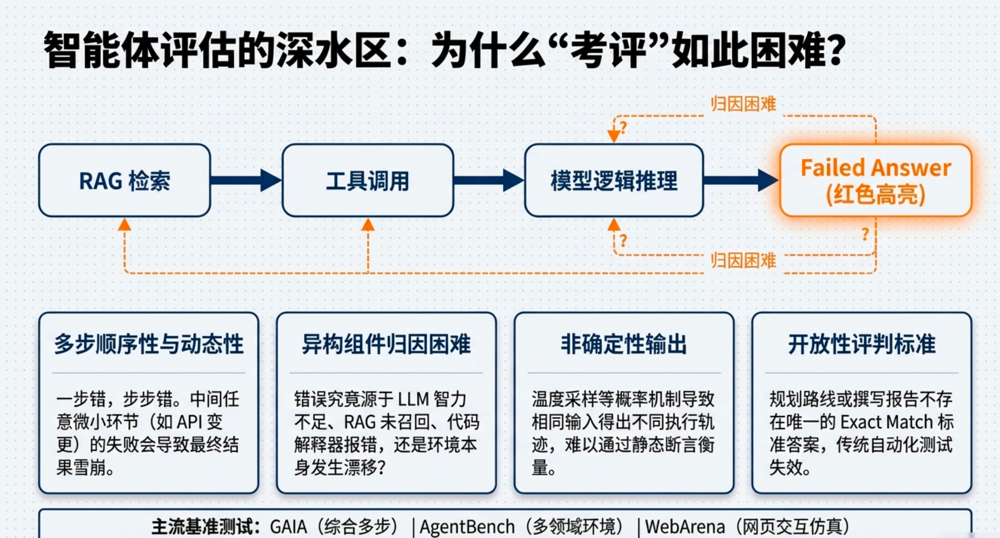
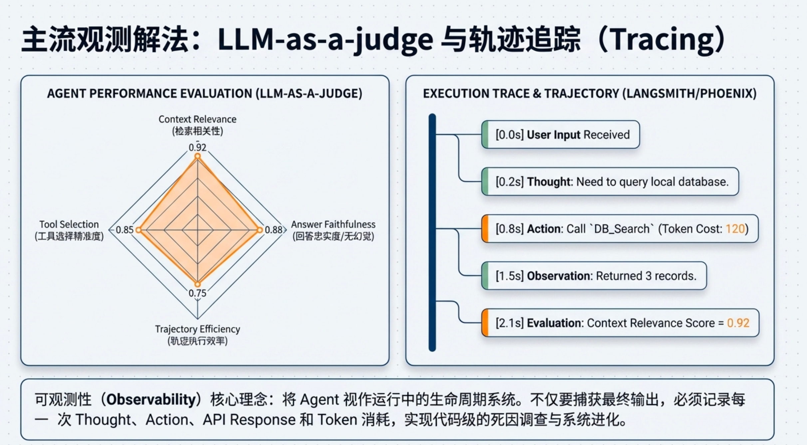
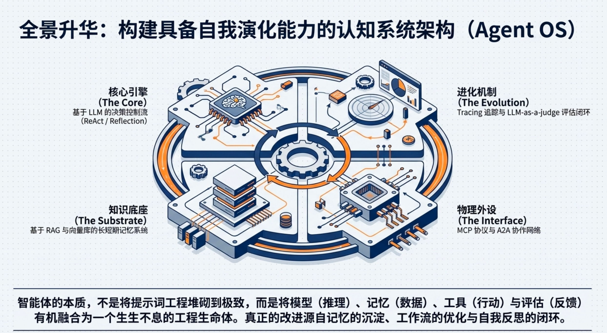

10 Agent Evaluation
10.1 Why Agent Evaluation Is Hard
Evaluating intelligent agents is significantly more difficult than evaluating traditional machine learning models. While many models can be assessed using fixed datasets and well-defined metrics, agent systems operate in dynamic environments where behavior unfolds over multiple steps. As a result, measuring agent performance requires evaluating not only final outputs but also the processes that lead to those outputs.

One major challenge is that agent tasks are often multi-step and sequential. An agent may retrieve information, call external tools, analyze intermediate results, and then produce a final answer. Even if the final output is correct, the intermediate steps may reveal inefficient reasoning, incorrect tool usage, or unnecessary operations. Traditional evaluation methods that focus only on final answers may fail to capture these issues.
Another difficulty arises from environment interaction. Agents frequently operate within external systems such as APIs, databases, web environments, or software tools. Their performance depends not only on reasoning ability but also on their ability to navigate these environments effectively. Because the environment may change over time, evaluation results can vary depending on external conditions.
Agent behavior is also non-deterministic. Modern language models often produce slightly different outputs for the same input due to sampling and probabilistic generation. This means that evaluating a single run of an agent may not accurately reflect its overall performance. Reliable evaluation often requires multiple runs and statistical aggregation.
Furthermore, many agent tasks involve open-ended objectives. Unlike classification tasks with clearly defined labels, real-world tasks may have multiple valid solutions. For example, an agent tasked with writing a report, planning a workflow, or analyzing data may produce answers that differ in structure or style while still being correct. Designing evaluation methods that fairly assess such outputs is challenging.
Another complication is the combination of heterogeneous capabilities within an agent system. Agents may rely on retrieval systems, tool invocation, reasoning chains, memory components, and external APIs. Failures can occur in any part of this pipeline. Determining whether a failure was caused by the model, the retrieval system, the tool interface, or the reasoning process is often difficult.
Because of these factors, agent evaluation typically requires a combination of approaches. Benchmark tasks, automated evaluation metrics, LLM-based judges, and system tracing tools are often used together to obtain a more complete picture of agent behavior. Designing reliable evaluation strategies therefore becomes an essential part of building robust agent systems.
10.2 What Should Be Evaluated in an Agent
Unlike traditional machine learning models, agents are not evaluated solely based on the correctness of their outputs. Agent systems operate through a sequence of actions that involve reasoning, tool usage, and interaction with external environments. As a result, evaluation must consider multiple aspects of agent behavior.
First, the task outcome must be evaluated. The most basic question is whether the agent successfully completed the task it was given. In many benchmarks this is measured using metrics such as accuracy, exact match, or task success rate.
Second, the reasoning and action trajectory should be examined. Agents often perform multi-step reasoning and invoke external tools during problem solving. Evaluating only the final answer may hide inefficient reasoning or incorrect tool usage.
Third, the tool interaction behavior must be assessed. Modern agents frequently rely on external APIs or software tools. Evaluation therefore includes checking whether the agent selected the correct tool, constructed valid tool calls, and used the tool results appropriately.
Finally, efficiency and reliability are also important considerations. Agents may produce correct answers but require excessive tokens, repeated tool calls, or unnecessary steps. Practical evaluation therefore often includes metrics such as response time, token consumption, and failure rates.
10.3 Evaluation Methods for Agents
In practice, most agent systems rely on three complementary evaluation methods: benchmark evaluation, LLM-based evaluation, and rule-based evaluation.
Benchmark evaluation measures agent performance on predefined tasks. These tasks simulate realistic scenarios where agents must perform reasoning, tool usage, or environment interaction.
Examples of widely used agent benchmarks include:
GAIA
A benchmark designed to evaluate general-purpose AI assistants on real-world tasks requiring reasoning, tool usage, and multi-step problem solving.AgentBench
A collection of environments designed to test the capabilities of autonomous agents across multiple domains.WebArena
A benchmark for evaluating agents that interact with websites and perform tasks in simulated web environments.
Benchmarks provide standardized comparisons between different agent systems. However, they often cover only a limited set of scenarios and may not fully reflect real-world deployments.
10.3.1 LLM-as-a-Judge Evaluation
LLM-based evaluation has become increasingly popular in recent years. Instead of relying solely on predefined metrics, another language model is used to evaluate the quality of an agent’s output.
In this approach, the evaluator model receives the task description, the agent’s output, and sometimes a reference answer. The model then produces a score or qualitative judgment based on criteria such as correctness, relevance, and clarity.

Several frameworks implement this approach, including:
Ragas
DeepEval
TruLens
Promptfoo
LLM-based evaluation is particularly useful for tasks where outputs are open-ended and difficult to measure with strict rules, such as report generation or reasoning explanations.
However, this method also introduces potential biases because the evaluator itself is another language model.
10.3.2 Rule-Based and Programmatic Evaluation
For many tasks, evaluation can be performed using deterministic rules or automated scripts. This method is particularly useful when the correctness of an output can be verified programmatically.
Examples include:
validating structured tool calls
checking whether generated code executes successfully
verifying that an API response matches a schema
measuring whether a task was completed within system constraints
Rule-based evaluation is widely used in engineering environments because it is deterministic, reproducible, and inexpensive to run.
10.4 Agent Evaluation Frameworks
Agent evaluation frameworks provide structured tools for running evaluation experiments and analyzing results. These frameworks integrate datasets, evaluation metrics, and experiment tracking into unified systems.
Commonly used frameworks include LangSmith, TruLens, DeepEval, and Arize Phoenix. These platforms allow developers to run evaluation suites, compare model versions, and analyze agent performance across multiple tasks.
By automating evaluation workflows, these frameworks make it easier to test new agent configurations and track improvements over time.
10.5 Observability and Tracing for Agents
In complex agent systems, understanding how an agent arrived at an answer is often as important as the answer itself. Observability tools record the full trajectory of an agent’s execution, including reasoning steps, tool calls, intermediate outputs, and final responses.
Tracing systems help developers diagnose failures and identify inefficiencies in agent workflows. For example, a failure might occur because of incorrect retrieval results, a malformed tool call, or an error in reasoning.
Platforms such as LangSmith, Helicone, and Arize Phoenix provide tracing capabilities that allow developers to visualize agent execution paths and analyze system behavior in detail.
10.6 Building an Agent Evaluation Pipeline
In practical systems, agent evaluation is usually implemented as a pipeline rather than a single metric.
A typical evaluation workflow includes the following steps:
- Task dataset
- Agent execution
- Trajectory logging
- Evaluation stage
- Reporting and analysis
This pipeline allows developers to systematically compare agent versions and track improvements across iterations.
10.7 Challenges in Evaluating Agents
Despite the growing ecosystem of evaluation tools, evaluating intelligent agents remains an open problem.
One challenge is that real-world tasks are often open-ended, making it difficult to define objective metrics. Different solutions may be equally valid but vary in style or reasoning approach.
Another difficulty is that agent systems involve many interacting components. Failures may originate from the language model, the retrieval system, the tool interface, or the environment itself. Identifying the root cause of errors can therefore be complex.
Finally, agents may exhibit stochastic behavior due to probabilistic generation. This means that evaluation results may vary across different runs, making consistent measurement difficult.
For these reasons, reliable agent evaluation typically requires a combination of benchmarks, automated metrics, LLM-based judgments, and system tracing. Together, these methods provide a more comprehensive view of agent performance.
